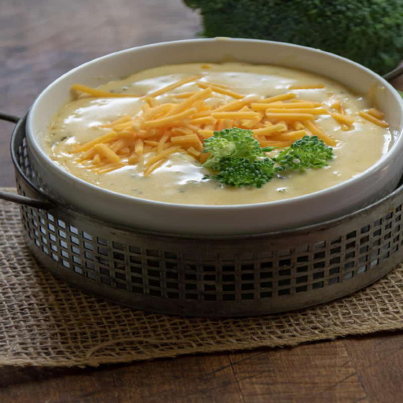

This easy, low-carb, keto-friendly broccoli cheddar soup is so tasty and ideal
for those winter nights
that we all need some comfort food!
Prep Time: 10 mins Cook Time: 25 mins Total Time: 35 mins Servings: 6 Yield: 6 servings
Ingredients
- 1 teaspoon butter
- 3 cloves garlic, minced
- 2 1/2 cups vegetable broth
- 3 cups chopped broccoli
- 1 cup heavy whipping cream
- 3 cups shredded cheddar cheese
- 2 slices bacon, chopped and cooked
- salt and ground black pepper to taste
Directions
- Melt butter in a saucepan over medium heat.
- Cook garlic until tender, about 2 minutes.
- Add vegetable broth, heavy cream, and broccoli.
- Bring to a boil; simmer until broccoli is tender, about 15 minutes.
- Add Cheddar cheese gradually, stirring constantly, until completely melted.
- Season with salt and pepper.
Home